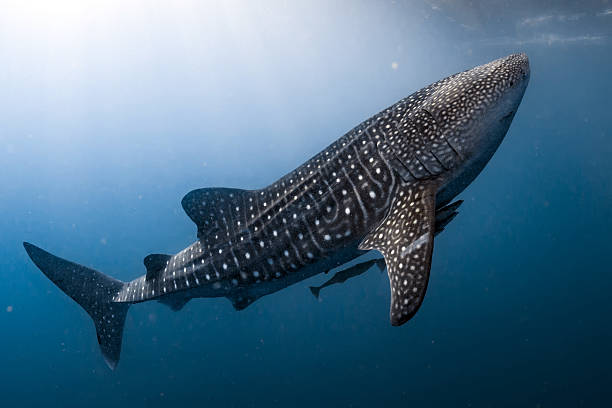

O tubarão-baleia pode ser encontrado nadando perto da superfície de quase todos os mares e oceanos do mundo e alcança medir até 20 metros de comprimento.
Um dos comportamentos mais notáveis do tubarão-baleia é a capacidade de usar certos órgãos em sua cabeça que o ajudam a se orientar no mar e a navegar. Conforme relata a EOL, o animal tem órgãos semelhantes a fossas, agrupados em torno de sua cabeça. Eles se chamam ampolas de Lorenzini e detectam campos elétricos e magnéticos fracos, os quais o auxiliam a nadar longas distâncias.
Além disso, seu ouvido interno é considerado o maior conhecido no reino animal, o que sugere que o tubarão-baleia é mais receptivo a sons de comprimento de onda longa e de baixa frequência. Assim, ele pode gerar algum tipo de comunicação auditiva entre seus companheiros debaixo da água.
Durante suas viagens pelos mares tropicais e oceanos do mundo, o tubarão-baleia é acompanhado por várias criaturas vivas que funcionam como hospedeiros e se alimentam tanto de bactérias na superfície de sua pele quanto do próprio zooplâncton, que o tubarão come filtrando pela boca.
